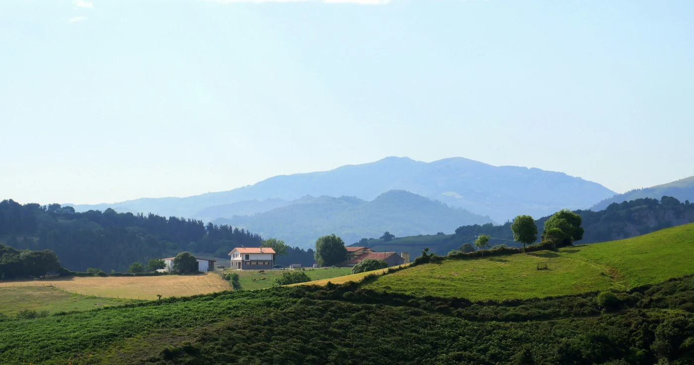
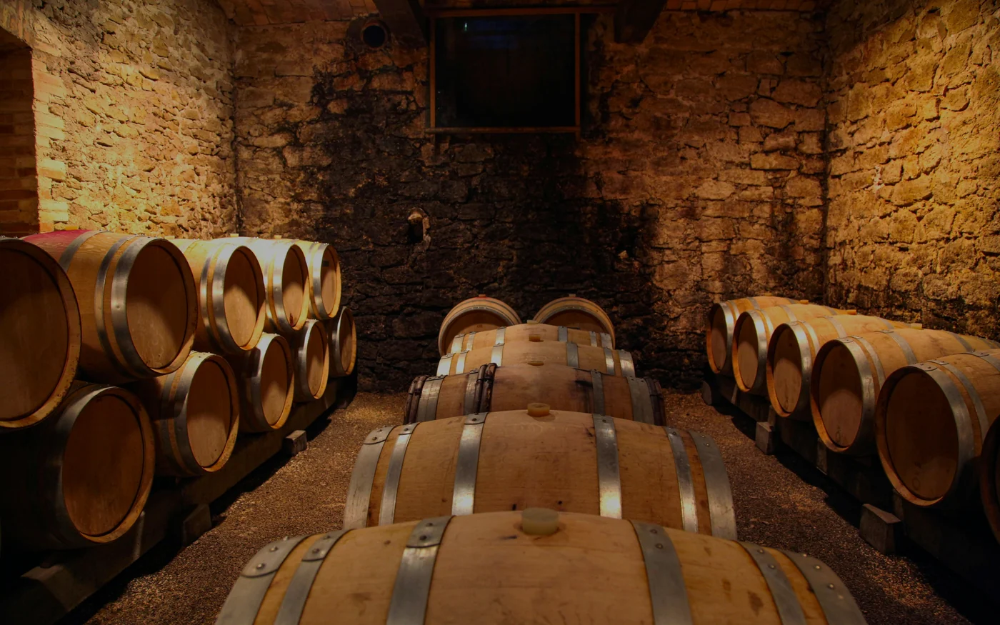
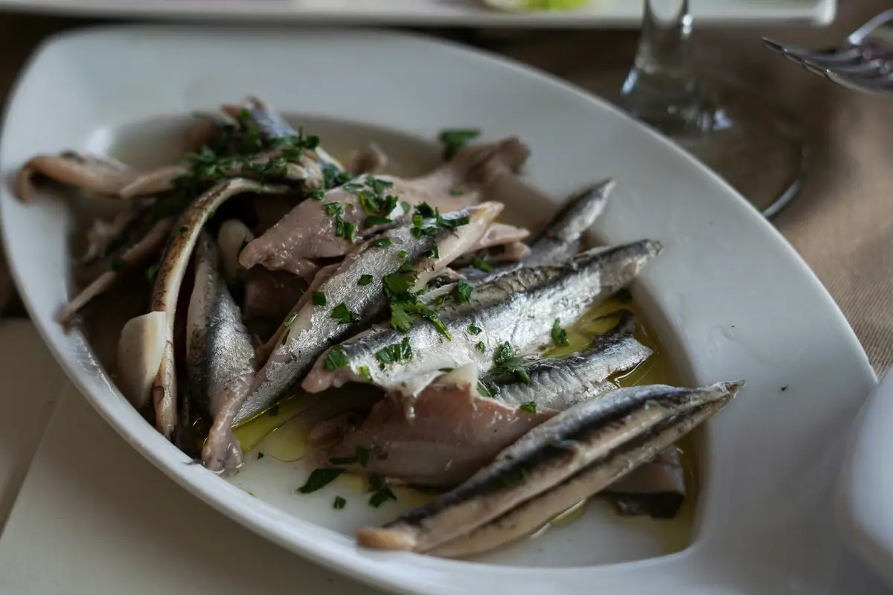
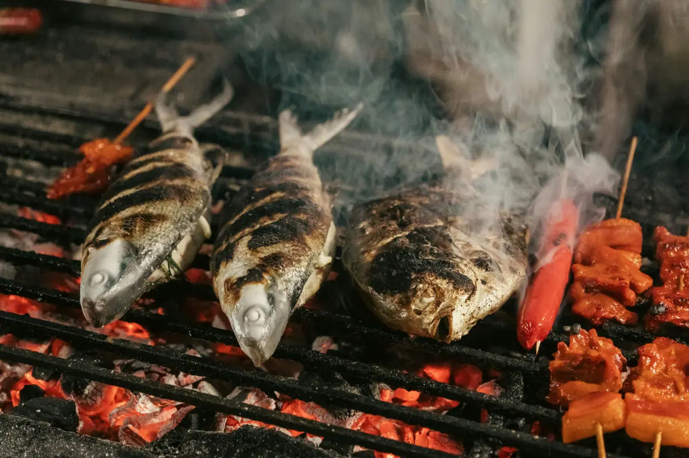
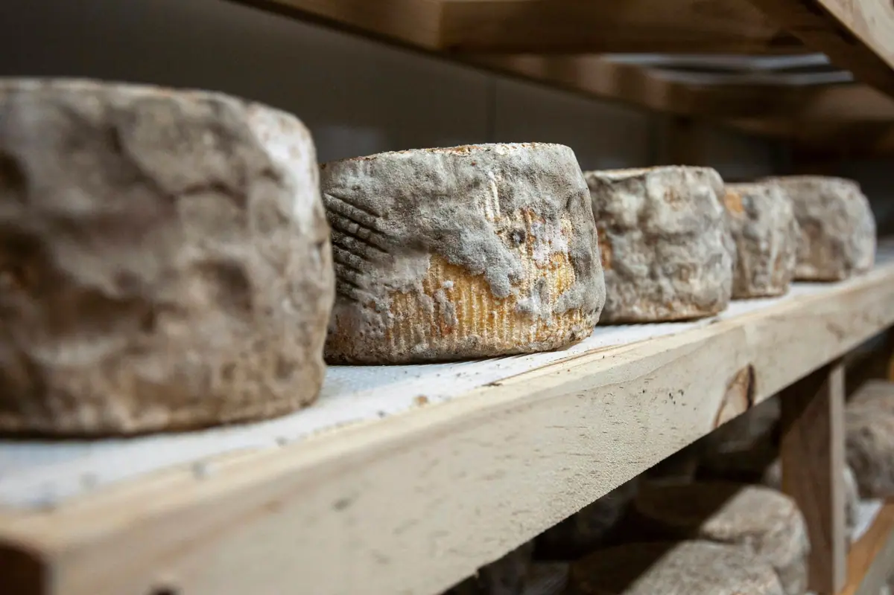

Txakoli hecho en Asteasu
Hacemos txakoli en Asteasu con la uva de nuestra ladera. Lo pruebas aquí y te lo llevas a casa.
Tres txakolis de la misma viña
Un blanco del año, uno sobre lías y un rosado. En la lista tienes la nota de cata de cada uno y con qué comerlo.
Ver los txakolis
Visita y cata
Os enseñamos la viña y la bodega, y probáis los tres txakolis. Elige el día, cuántos sois y si os quedáis a comer.

Cajas para llevar o enviar
Elige las botellas que quieras para tu caja. La recoges en la bodega o te la enviamos.
Preparar la cajaLos txakolis
Tu caja0-
11 €
Fresco y con un punto de aguja. Huele a manzana verde y a limón.
Con anchoas, gildas y marisco.

-
15 €
Pasa unos meses con sus lías. Es más redondo, con aroma de fruta blanca madura.
Con pescado a la brasa.

-
12 €
Ligero, con fresa y frambuesa. Mejor muy frío.
Con queso de oveja y embutido.

Dinos por WhatsApp qué botellas quieres.
Tu caja
Todavía no has elegido botellas. Pulsa + en la lista.